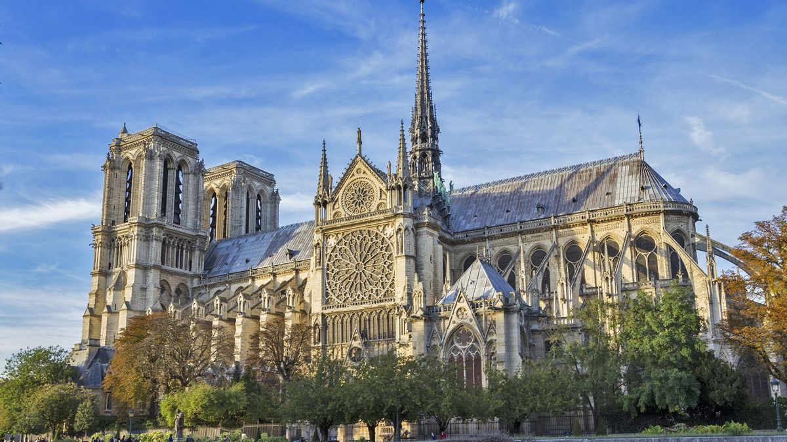
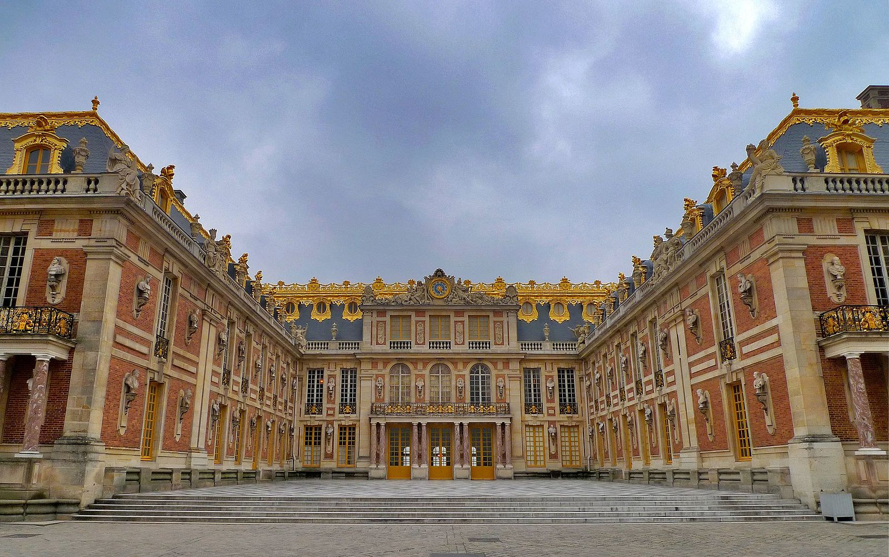
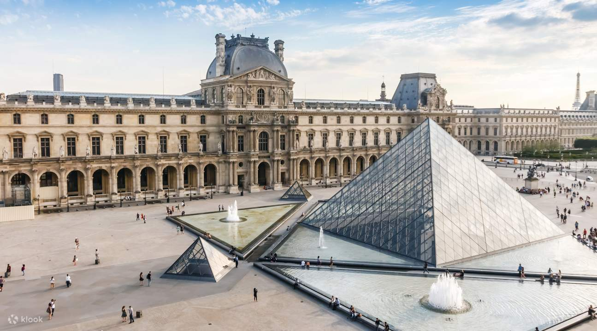

Prancis, secara resmi disebut sebagai Republik Prancis, adalah sebuah negara yang teritori metropolitannya terletak di Eropa Barat dan juga memiliki berbagai pulau dan teritori seberang laut yang terletak di benua lain
Katedral Notre-Dame de Paris

Katedral Notre-Dame de Paris, atau sering disebut Notre-Dame, adalah salah satu katedral Gothik paling terkenal di dunia dan salah satu ikon kota Paris, Prancis.
Berikut adalah sejarah singkat Katedral Notre-Dame de Paris:
Pembangunan Awal : Konstruksi katedral dimulai pada tahun 1163 di bawah pemerintahan Raja Louis VII dan diperkirakan selesai pada tahun 1345. Itu dibangun di atas situs gereja-gereja Kristen sebelumnya yang lebih tua.
Arsitektur Gothic : Katedral ini adalah contoh penting arsitektur Gothik Prancis abad pertengahan. Strukturnya memiliki langit-langit tinggi yang megah, jendela-jendela berwarna kaca patri yang indah, dan pilar-pilar yang rumit.
Peran Keagamaan : Notre-Dame adalah pusat kehidupan keagamaan dan budaya di Paris. Ini adalah tempat ibadah penting dan tempat peristiwa-peristiwa sejarah yang signifikan, termasuk pemahkotaan Napoleon Bonaparte sebagai Kaisar Prancis pada tahun 1804.
Hunchback of Notre-Dame : Novel Victor Hugo yang terkenal, "The Hunchback of Notre-Dame" (Notre-Dame de Paris dalam bahasa Prancis), diterbitkan pada tahun 1831 dan berperan penting dalam mempopulerkan katedral ini.
Restorasi dan Pemugaran : Pada abad ke-19, katedral mengalami pemugaran besar-besaran yang dipimpin oleh arsitek Eugène Viollet-le-Duc. Restorasi ini mengembalikan katedral ke kilau dan keindahannya yang asli.
Kerusakan dan Restorasi Baru : Pada tanggal 15 April 2019, terjadi kebakaran besar yang merusak sebagian besar atap dan menara katedral. Namun, upaya pemugaran yang besar telah dimulai untuk mengembalikan katedral ini ke keadaan semula.
Warisan Budaya : Notre-Dame de Paris adalah salah satu warisan budaya Prancis dan UNESCO yang diakui sebagai Situs Warisan Dunia. Ini juga menjadi salah satu tujuan wisata paling populer di dunia.
Katedral Notre-Dame de Paris adalah salah satu katedral paling terkenal di dunia, dengan sejarah yang panjang dan pengaruh besar dalam seni, sastra, dan budaya. Meskipun mengalami kerusakan, upaya pemugaran yang gigih bertujuan untuk menjaga warisan berharga ini untuk generasi mendatang.
Istana Versailles

Istana Versailles (Château de Versailles) adalah salah satu istana paling terkenal dan ikonik di dunia. Berikut adalah sejarah singkat Istana Versailles:
Asal Mula : Istana ini awalnya merupakan paviliun berburu yang dibangun oleh Raja Louis XIII pada tahun 1623. Putra dan penerusnya, Raja Louis XIV, memutuskan untuk mengembangkan dan memperluas paviliun tersebut menjadi istana yang lebih besar dan mewah.
Pembangunan oleh Raja Louis XIV : Raja Louis XIV, yang dikenal sebagai Raja Matahari, memerintahkan pembangunan istana yang besar dan megah di Versailles sebagai pusat pemerintahan yang efektif dan sebagai lambang kekuasaannya yang tak terbantahkan. Pembangunan utama dimulai pada tahun 1661 dan berlangsung selama beberapa dekade.
Arsitektur dan Desain : Arsitek terkenal, seperti Louis Le Vau, Jules Hardouin-Mansart, dan Charles Le Brun, berkontribusi pada desain dan pembangunan istana ini. Istana Versailles menjadi contoh paling cemerlang dari arsitektur Barok Prancis.
Kebun dan Taman : Istana ini dikelilingi oleh taman yang spektakuler, yang dirancang oleh desainer lanskap André Le Nôtre. Taman ini memiliki air mancur, kolam, patung-patung, dan ruang-ruang yang indah.
Peran Politik Istana Versailles digunakan sebagai pusat pemerintahan Prancis selama pemerintahan Louis XIV. Ini adalah tempat di mana keputusan politik penting diambil dan menjadi simbol absolutisme monarki.
Perdamaian Versailles : Setelah berakhirnya Perang Dunia I pada tahun 1919, Perjanjian Versailles ditandatangani di istana ini, mengakhiri perang dan mengatur ketentuan perdamaian.
Revolution Prancis : Pada tahun 1789, Revolusi Prancis dimulai dan istana ini dijarah oleh massa yang marah. Kedudukan monarki dihapuskan, dan istana ini menjadi museum negara.
Pemugaran dan Pemeliharaan :Sejak Revolusi Prancis, istana ini telah mengalami pemugaran besar-besaran. Hari ini, istana dan taman-tamannya dirawat dengan baik dan merupakan salah satu tujuan wisata paling populer di Prancis.
Istana Versailles adalah lambang kemegahan dan kekuasaan monarki Prancis pada masa Raja Louis XIV dan merupakan salah satu situs bersejarah yang paling terkenal di dunia. Itu juga memiliki dampak besar pada seni, arsitektur, dan budaya Prancis.
Museum Louvre

Museum Louvre, atau Louvre, adalah salah satu museum seni terbesar dan paling terkenal di dunia yang terletak di Paris, Prancis. Berikut adalah sejarah singkat Museum Louvre:
Asal Mula : Louvre awalnya dibangun sebagai benteng oleh Raja Philippe Auguste pada abad ke-12 untuk melindungi kota Paris. Awalnya disebut "Château du Louvre" atau "Istana Louvre."
Transformasi Menjadi Istana : Pada abad ke-16, Raja François I dari Prancis mengubah istana ini menjadi kediaman kerajaan yang megah. Selama beberapa dekade, berbagai raja Prancis mengembangkan dan memperluas istana ini.
Pembukaan sebagai Museum : Selama Revolusi Prancis pada tahun 1793, Louvre diubah menjadi museum publik. Ini menjadi salah satu museum seni pertama di dunia yang dibuka untuk umum.
Koleksi Seni yang Luar Biasa : Louvre memiliki koleksi seni yang luar biasa, termasuk lukisan-lukisan terkenal seperti "Mona Lisa" oleh Leonardo da Vinci, "Venus de Milo," "Winged Victory of Samothrace," dan banyak lagi. Selain itu, koleksi Louvre mencakup berbagai jenis seni seperti patung, arsitektur, karya seni Asia, dan artefak sejarah.
Arsitektur yang Megah : Louvre dikenal dengan arsitekturnya yang megah, dengan piramida kaca terkenal yang dirancang oleh arsitek I. M. Pei yang diresmikan pada tahun 1989.
Ekspansi dan Pemugaran : Louvre mengalami ekspansi besar-besaran selama beberapa dekade terakhir, termasuk proyek pembangunan sayap-sayap baru untuk mengakomodasi koleksi yang semakin berkembang.
Kunjungan Wisatawan : Louvre adalah salah satu tujuan wisata paling populer di dunia dan menarik jutaan pengunjung setiap tahun.
Museum Louvre adalah salah satu situs bersejarah dan budaya paling terkenal di Prancis dan di seluruh dunia. Ini adalah tempat yang penting untuk mengagumi seni dan budaya dari berbagai periode dan budaya yang berbeda.